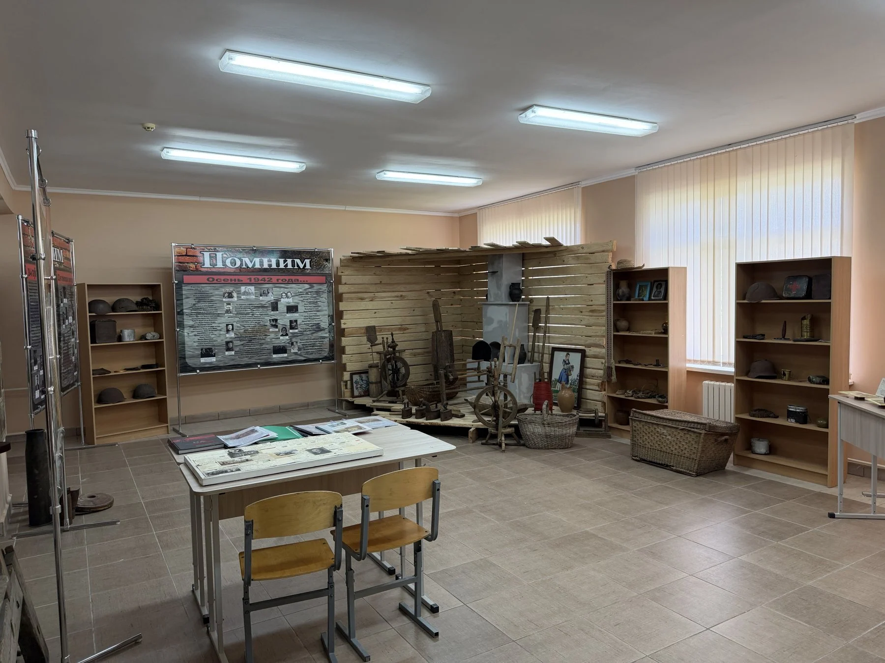
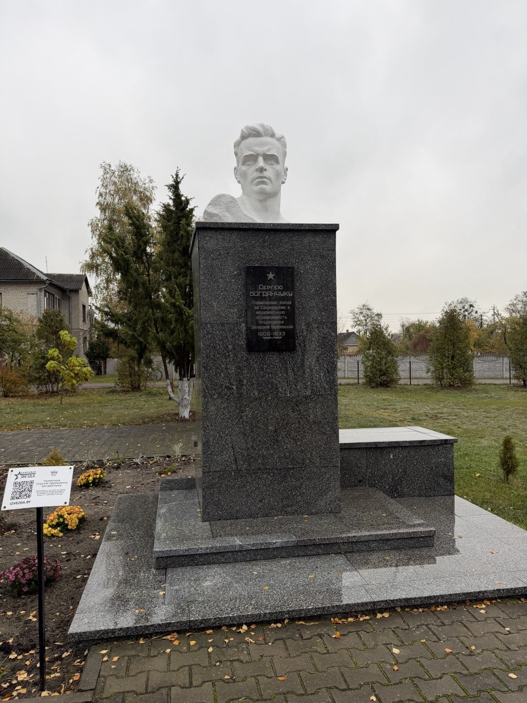

История рядом.
Школьный музей и памятные места Мухавца. Смотрите рассказы, исследуйте 3D-прогулки и задавайте вопросы.
Выбрать место

Памятник
Сергею Богданчуку

Памятник землякам
Спросите экскурсовода
Выберите место и задайте вопрос о его истории. У ответа можно открыть нужный момент видеорассказа.